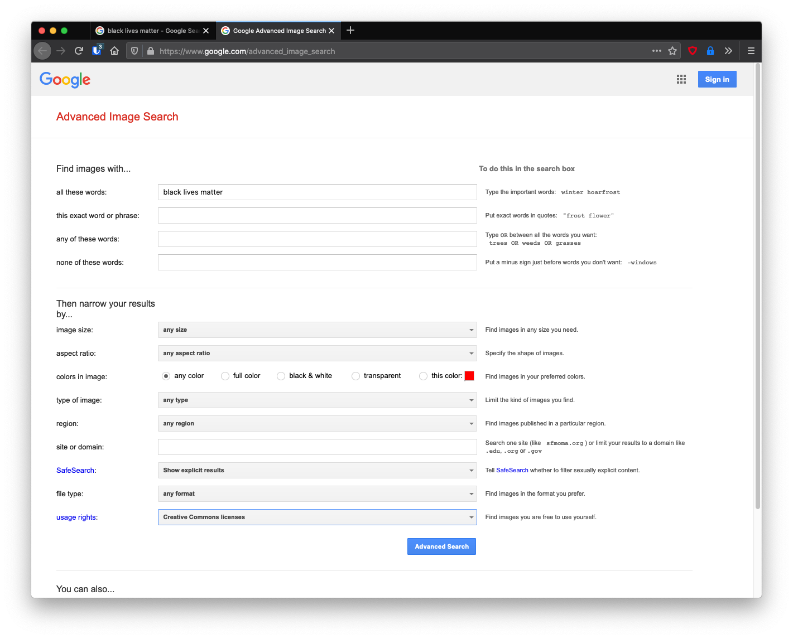
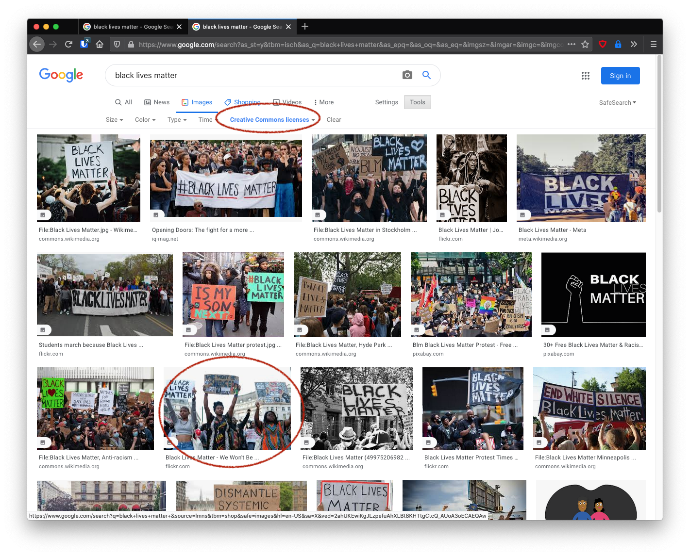
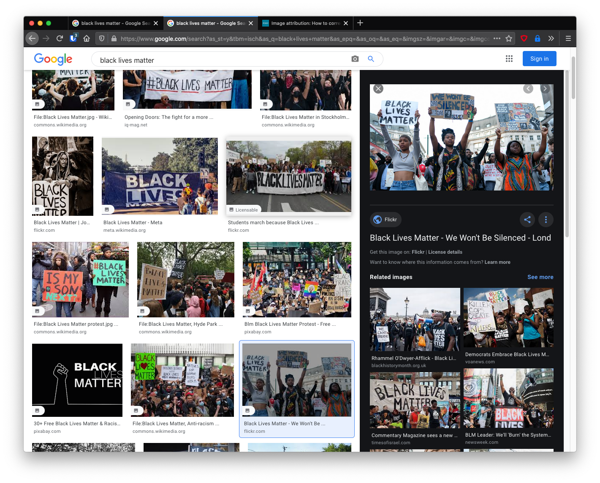
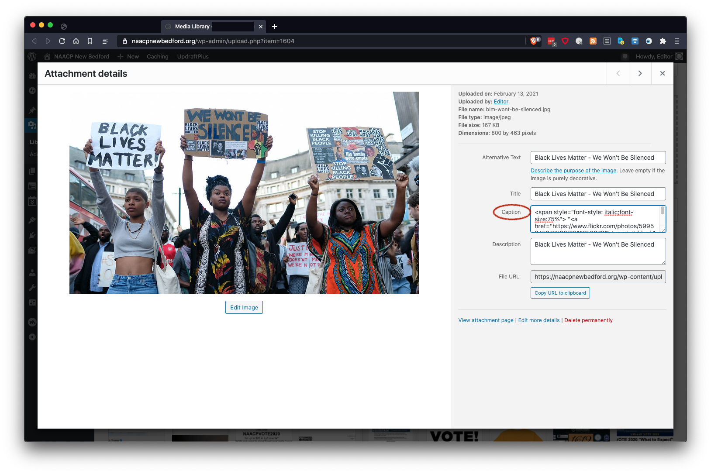
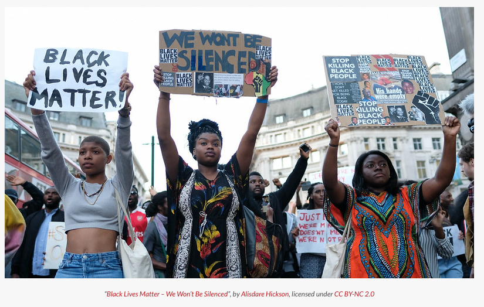
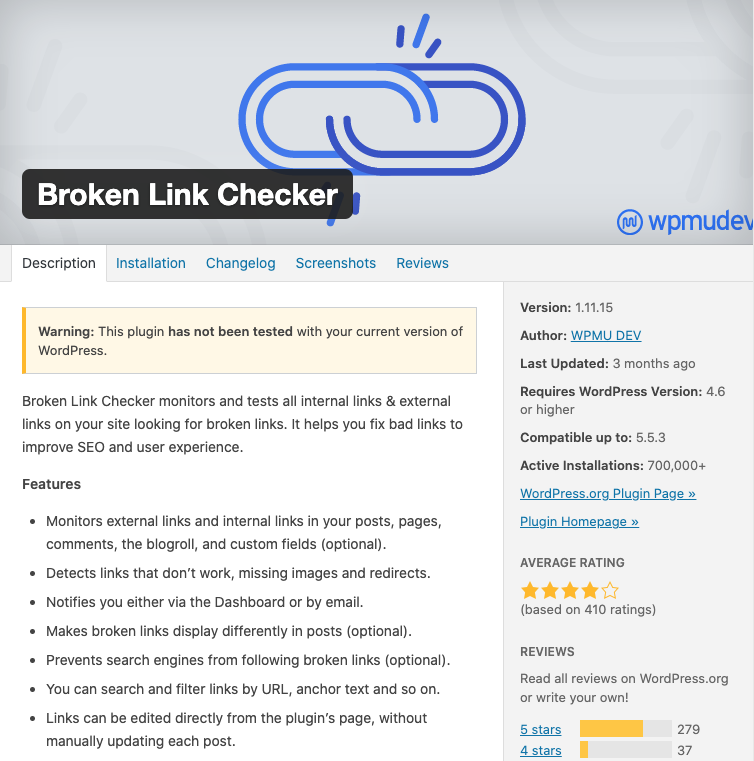
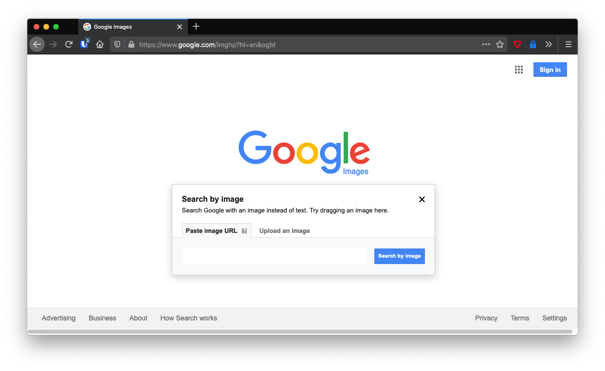
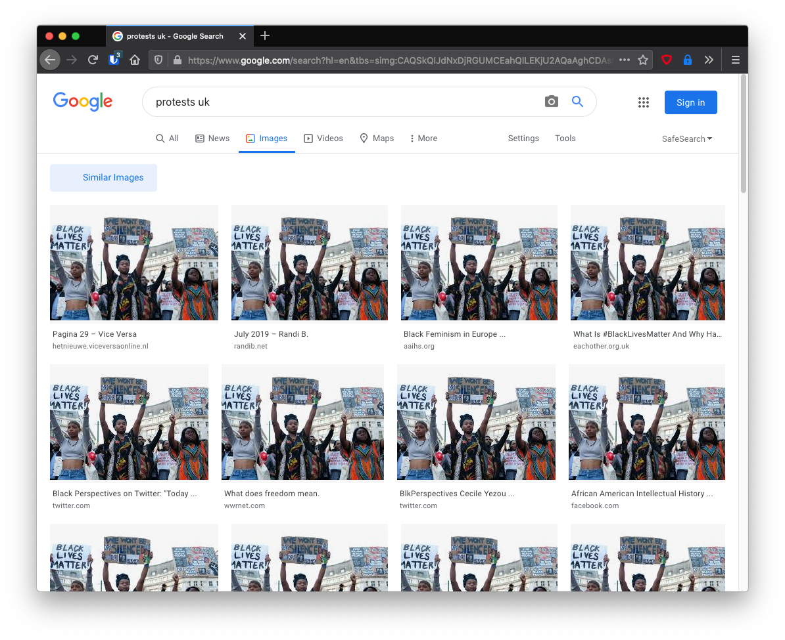
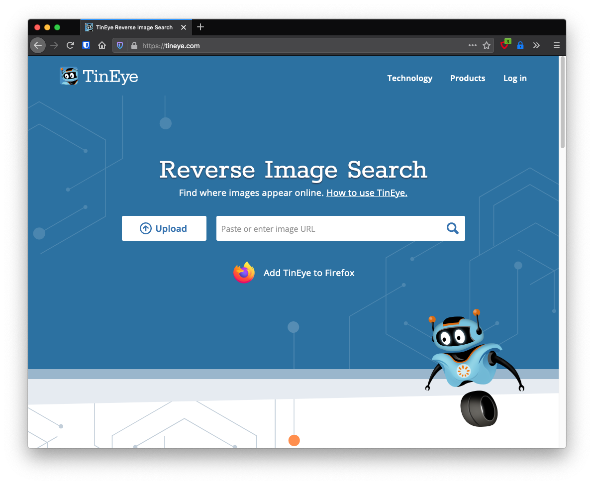
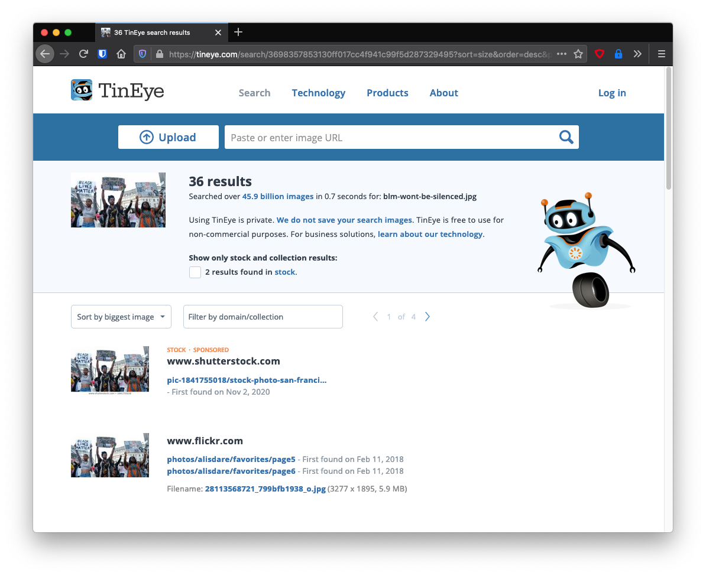

2021-03-20 08:00
Of all the perils of blogging, it’s not the people who send you hate emails that are dangerous: it’s the copyright trolls — and also their occasionally legitimate cousins. I recently got slapped with a legitimate charge for inadvertently using a copyrighted image.
If anyone sends you a bill of this sort, verify that in fact they represent the agency they claim to represent. In my case, I called Reuters and determined that the agency that had billed me was, in fact, legit.
Here, then, is my advice on how to avoid improperly using copyrighted images on your website.
I will assume most readers are running WordPress which purportedly powers 40% of the web.
There are plenty of collections of stock images you can use under Creative Commons licenses. Most are generic images, perhaps a little bland, and may not be the type of image you are looking for, or they may require rooting around dozens of collections of stock images.
An alternative is to use Google image search — as you may already be doing — but to use the advanced image search:
https://www.google.com/advanced_image_search
Now, for example, let’s search on “black lives matter” and move the cursor down to the bottom next to “Usage rights” where we’ll select Creative Commons licenses:

This should bring up some images licensed under Creative Commons which we can use with attribution. I’ve circled one that we’re going to use as an example:

To properly attribute an image this is an excellent guide:
https://www.pixsy.com/academy/image-user/correctly-attribute-images/
Our strategy will be to place all the copyright attribution information we need right in the caption of the Wordpress image in the WordPress Media Library (more on this in a minute).
For this we need six pieces of information. We can usually track it all down from the image details provided by Google. Remember: you must provide attribution to prove your use is legit!

Here’s the information we found:
Attributing an image is a bit of a pain but it’s got to be done. To make life easier, I developed a script on my Mac. You should be able to use it on your Mac or a Linux system, or adapt it for Windows command line:
#!/bin/bash
# this is a Unix & MacOS script that will generate the correct HTML
# for your Wordpress image caption.
CAPTION="Black Lives Matter - We Won't Be Silenced"
CAPTIONLINK="https://www.flickr.com/photos/59952459@N08/28113568721"
AUTHOR="Alisdare Hickson"
AUTHORLINK="https://www.flickr.com/photos/alisdare/"
LICENSE="CC BY-NC 2.0"
LICENSELINK="https://creativecommons.org/licenses/by-nc/2.0/"
echo "<span style="font-style: italic;font-size:75%"> "<a href="$CAPTIONLINK" target="_blank" rel="noopener noreferrer">$CAPTION</a>”, by <a href="$AUTHORLINK" target="_blank" rel="noopener noreferrer">$AUTHOR</a>, licensed under <a href="$LICENSELINK" target="_blank" rel="noopener noreferrer">$LICENSE</a></span>" > caption.txt
open caption.txtThe script produces a text file called caption.txt which you can open and use for cut and paste:
<span style="font-style: italic;font-size:75%"> "<a href="https://www.flickr.com/photos/59952459@N08/28113568721" target="_blank" rel="noopener noreferrer">Black Lives Matter - We Won't Be Silenced</a>”, by <a href="https://www.flickr.com/photos/alisdare/" target="_blank" rel="noopener noreferrer">Alisdare Hickson</a>, licensed under <a href="https://creativecommons.org/licenses/by-nc/2.0/" target="_blank" rel="noopener noreferrer">CC BY-NC 2.0</a></span>In WordPress, add the downloaded image to your Media Library and also add the title and the generated caption code above to the image’s metadata. The generated code above will go in the Caption field:

Now that the nightmare is over you can use the image in any WordPress post or page, and the caption (which is now fully attributed) will follow the image to whatever post in which you use it:

If you are using a bunch of images that could turn around and bite you later, delete them.

You may still need to check some of the images you did not delete but believe may be safe to use.
There are two ways that I know of to check an image:

https://www.google.com/imghp?hl=en&ogbl
If we upload the image we were just looking at we can find all sorts of uses of it all over the internet. You may have to dig through all the images to find the owner’s version:


https://tineye.com/
Searching with TinEye produces a similar list of places the image can be found, but also information on whether it is a stock image or not:
